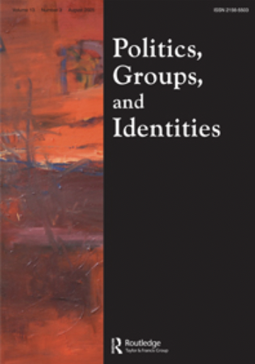
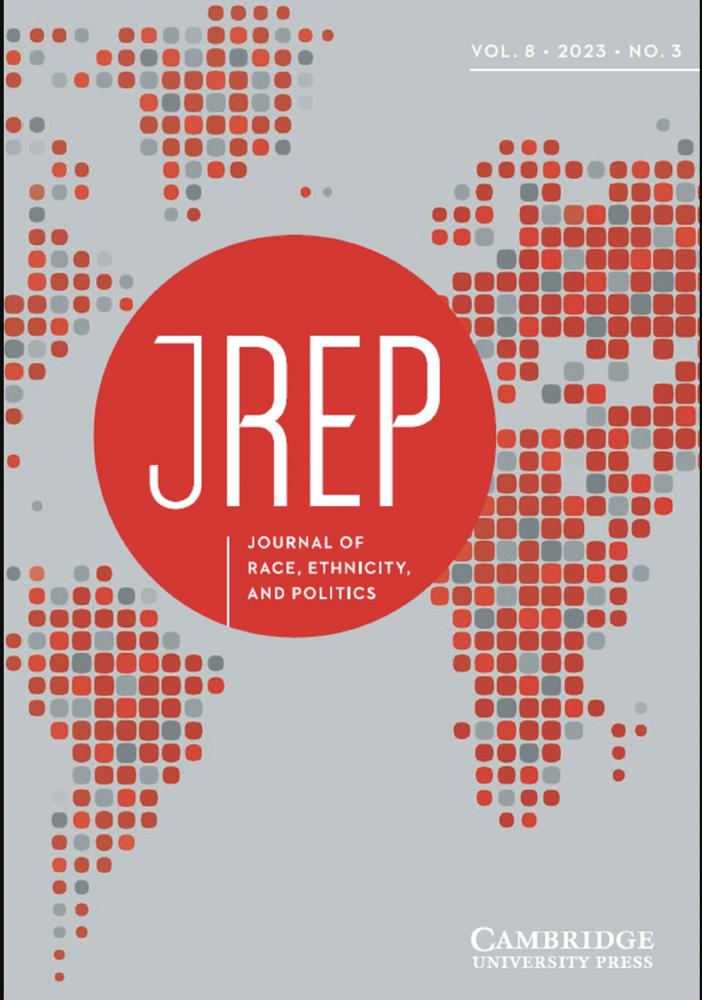
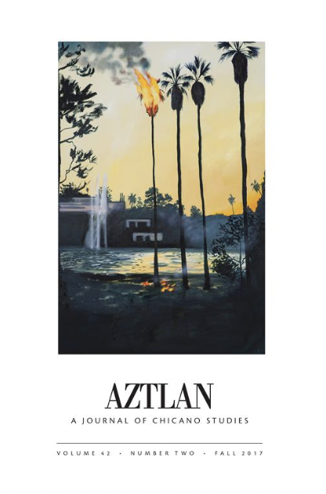

Academic Writing
Home
Academic
Nonprofit
Sports
Resume
 Dignity Politics in Immigrant Detention
Read Article
American Democracy at Risk
Read Article
 Latino Voter Mobilization
Read Article
 Latino Vote Choice
Read Article